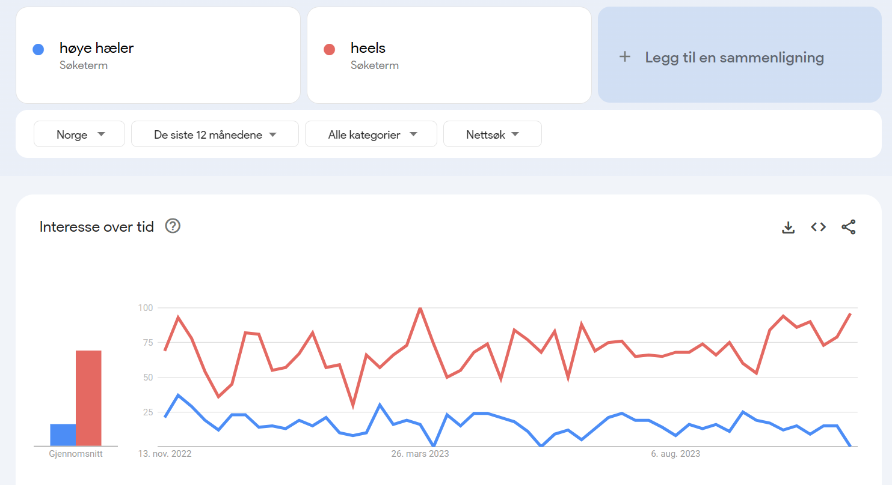

Google trends
Nøkkelord & søkeord
Jeg valgte å ta siste 12 måneder søk med Norge som basis og kun tall fra Norge. Til tross for at jeg ønsket å ha internasjonalt så er det bedre å starte med et feste i et land og utvide seg videre senere. Jeg søkte veldig mye forskjellig til jeg fant noe som hadde gode tall og med riktig stigning. Jeg har for eksempel tatt i bruk nøkkelordet ‘’tøfler’’ som hadde en høyere score i Norge enn loafers. Har også tatt i bruk butikknavnet mitt som et nøkkelord, fordi jeg vet det er veldig trendy, med tanke på mye annet også, det har en sikker graf som stiger greit. Har også sjekket forskjellen mellom nøkkelordet ‘’boots’’ og ‘’ Høye Boots’’. Jeg valgte å ta med like ord som ligner for å se resultatene. Alle nøkkelord som er tatt med føler jeg er relevante for min nettbutikk. Under denne teksten ville dere se en liste med nøkkelord jeg har tatt med og deretter grafene til disse.
Relevante nøkkelord
*Sko
*Tøfler
*Høye hæler
*Loafers
*Heels
*Pensko
*Høye boots
*Boots
*Angels
Under her vil dere se de forskjellige grafene til mine relevante nøkkelord.
Grafen til nøkkelordet Angels.
Grafen til nøkkelordet pensko og sko.
Grafen til nøkkelordet høye boots og boots.
Graf til Loafers og tøfler
Heels
Oppsummering av nøkkelord
Som man kan se i grafene så er noen nøkkelord, bedre enn andre. Derfor ville jeg ikke brukt alle etter dette søket var gjort. Jeg har også sett at noen ord er mer populære visse årstider eller måneder.Jeg kommer til å ta i bruk nøkkelordene: ANGELS, sko, boots, tøfler og heels. Da disse har gitt best resultat geografisk.
SEO Lighthouse
Her er resultatet av sidene før noe endringer er gjort.
Dette er noe som kom opp på alle sider, mangler meta. Det har jeg fikset i ettertid
Rød varseltrekant for at betalingsbildene er for små, må endre størrelse på de, noe jeg ikke rekker å gjøre. Denne varselen kom på både forsiden og utsjekksiden
På produktsiden fikk jeg motsatt varsel om bilder, der jeg egentlig burde ha satt inn bildene i et redigeringsprogram for å endre original størrelse på bilde. Fått beskjed om at det tar alt for lang tid, derfor kunne jeg dokumentere uten å gjøre det.
Jeg fikk opp craw varseltrekant på produktsiden som referte til flteringsfeltene. Etter at jeg la inn # for link så ble dette ordnet. Samtidig som den foreslo at jeg burde ha større padding mellom filterordene for bedre mobilopplevelse
UU Lighthouse & Webaim
Jeg manglet forklaringstekst til linkene, noe jeg har endret og satt inn. Dette var et varsel som dukket opp på alle sider.
Jeg har fått opp samme error på alle sider, derfor har jeg kun tatt med ett bilde. Har jeg fått error for tomme linker, det løste seg ved å legge inn # for ikonene, da erroren viste seg på ikoner. Den savner også en h1, noe som jeg hadde før, men da funker det ikke å gå til hjem via butikknavnet derfor har jeg ikke endret det. Når det kommer til reduntant så skal det egentlig kunne funke ha to like, skjønner ikke helt hvordan jeg skal løse det, når det samme kommer ved endring også.
CHATGPT resultater
Alle sidene ga samme resultater, utenom en ekstra ting ble peket ut for produktsiden og utsjekksiden(lenkestruktur) i UU,derfor har jeg lagt det inn som et eget bilde under. Chatgpt ga meg også generelle tips som jeg har lagt inn, så det ikke nødvendig å ha med bilder av alle sidene når den ga like svar for alle.
SEO , UU og CHATGPT SAMMENLIGNING
| Lighthouse | Webaim | CHATGPT |
|---|---|---|
Seo ga meg rød varseltrekant for service image low resolution, samtidig som den også ga rød varseltrekant for display image inncorrect aspect ratio |
Jeg har fått opp 7 error på tomme linker som webaim referer til ikoner uten videre link. |
Chatgpt sine tips for en bedre SEO var å legge inn meta-tags på alle sider. Legge inn alternativ tekster for bilder, ha unike og beskrivende titler for alle bilder for å forbedre tilgjengligheten og gi søkemotorer kontekst om bildene. Samtidig som at den tipser om å ha korrekte lenker på forsiden |
SEO ga oss alle sidene rød varseltrekant for no meta |
Webaim ga meg gul varsel for å ikke ha med h1 overskrift i header, samtidig som den ga 2 gule varslinger for reduiant link og 1 gul varsel for nearby image has the same alt tekst. |
Chatgpt sine tips for å få en bedre UU var å legge kontrast på produktsiden og utsjekksiden. Legge inn aria-rolle navigasjon på alle sider, og ha tastatur navigasjon på sidene så det er mulig å bruke nettsiden uten mus. |
SEO ga rød varseltrekant for produktsiden der jeg har lagt inn filtrering, vil den at jeg skal skrive koden annerledes. |
Som nevnt tidligere så har chatgpt gitt like resultater på alle sider, utenom på produktsiden og utsjekk siden hadde den et ekstra tips om lenkestruktur. |
|
| På lighthouse ga UU samme varseltrekant og den samme på alle sidene, der linker er uten forklaring navn. Dette var den eneste feilkoden lighthouse ga for UU. |
Etter å ha gjort alle forbedringer fra lighthouse og webaim utenom bilde forbedringer fra lighthouse, har jeg ganske bra resultater. Legger ved bilde under
tilgjenglighet
På forsiden klarer skjermleseren å lese alt, eneste jeg kan gjøre bedre er å ha enkel bilder av betalingsmuligheter som sier de konkrete betalingsmulighetene. På produktside, leste den opp alt, bruker nedpil for å gå til neste. Noe jeg vet blir brukt av svaksynte. Jeg kan endre navn på ikoner på denne siden så det blir riktig uttalelse og ord som blir sagt. Andre endringer er å ha hele nettsiden på norsk så blir det bedre uttalelse og kanskje lettere å forstå, samtidig som jeg regner med at man kan endre språk på opplesing. På utsjekk siden, leste den opp alt. Hadde ikke noe utfordringer som jeg støtet på. Jeg har også lagt inn ARIA for bedre skjermlesing.
Jeg har lagt inn # linker til ikoner for at det skulle være mulig å trykke seg gjennom ikonene på hele siden, dette gjelder for alle sider i nettbutikken utenom analysesiden. Legger ved et bilde under.

Microdata
Jeg får ikke opp noe når jeg kjører koden, det beregner jeg som ingen feil og at alt er fint. Legger ved et bilde under.
META & SOME
Jeg har lagt til meta-tags for hver side og en for some. Legger ved bilde